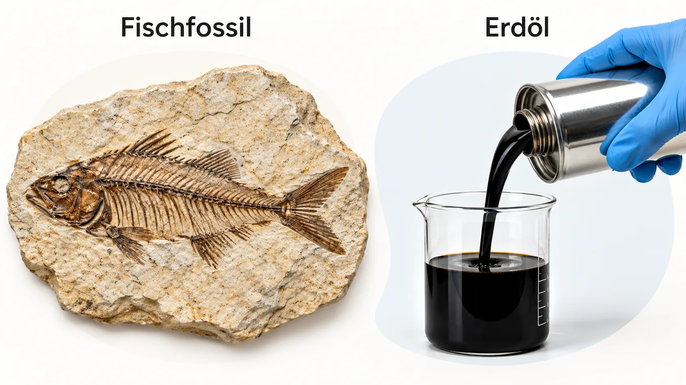

Fossilien – Spuren aus der Urzeit

In Steinbrüchen findet man manchmal Gesteinsplatten mit dem Abdruck eines Fisches, einer Muschel oder eines Farnblatts. Solche versteinerten Überreste oder Spuren von Lebewesen heißen . Die Tiere und Pflanzen lebten vor vielen Millionen Jahren.
Zu einem Fossil wird ein toter Körper nur, wenn ihn schnell Schlamm oder Sand bedeckt. Dann kommt keine Luft mehr heran () und der Körper verwest nicht vollständig. Neue Schichten pressen den Schlamm im Lauf der Zeit zu festem Gestein zusammen. Mineralien aus dem Wasser füllen die Knochen aus – so wird der Fisch zu Stein.
Das Wort fossil kommt aus dem Lateinischen und bedeutet „ausgegraben“. Auch Kohle, Erdöl und Erdgas nennt man : Sie stammen ebenfalls von Lebewesen der Urzeit und werden heute aus der Erde geholt.
Fossil und Erdöl ✨ KI prüft
Schreibe ganze Sätze oder Stichpunkte. Die KI achtet nur auf den Inhalt, nicht auf die Rechtschreibung. Danach kannst du die Musterlösung ansehen.
MERKE
- Fossilien sind versteinerte Überreste oder Abdrücke von Lebewesen aus der Urzeit.
- Sie entstehen, wenn ein toter Körper schnell unter Luftabschluss von Schlamm oder Sand bedeckt wird.
- Kohle, Erdöl und Erdgas heißen fossile Rohstoffe, weil sie ebenfalls aus Lebewesen der Urzeit entstanden sind.
Warum nicht jeder Fisch zum Fossil wird ✨ KI prüft
Fossile Rohstoffe – Energie aus der Urzeit
Aus Biomasse entstanden. Erdöl, Erdgas und Kohle sind aus entstanden, also aus den Resten abgestorbener Pflanzen und Tiere. Unter Luftabschluss konnten diese Reste nicht verrotten. Stattdessen wurden sie über Millionen Jahre tief in der Erde umgewandelt.
Weil sie von Lebewesen stammen, enthalten sie viel . Wie Holz und Raps gehören sie deshalb zu den organischen Rohstoffen – nur wachsen sie nicht nach.
Wofür wir sie nutzen. Der größte Teil wird verbrannt. Dabei wird viel Wärme frei, mit der man heizt, Motoren antreibt oder Strom erzeugt. Kohle, Erdöl und Erdgas sind also .
- Kohle wird vor allem in Kraftwerken zur Stromerzeugung verbrannt.
- Erdöl wird in der zu Benzin, Diesel, Heizöl und verarbeitet.
- Erdgas heizt viele Wohnungen und Häuser.
Ein kleinerer Teil, vor allem vom Erdöl, ist Ausgangsstoff für die : für Kunststoffe, Farben oder Medikamente.
Wohin fließt die Energie aus der Urzeit? Tippe unten nacheinander auf Kohle, Erdöl und Erdgas.
MERKE
- Fossile Rohstoffe sind aus Biomasse entstanden und enthalten viel Kohlenstoff.
- Sie werden vor allem als Energieträger verbrannt: Kohle für Strom, Erdöl für Kraftstoffe und Heizöl, Erdgas zum Heizen.
- Ein Teil des Erdöls ist Ausgangsstoff für die chemische Industrie, zum Beispiel für Kunststoffe.
Kohle, Erdöl oder Erdgas?
Tippe eine Karte an und dann das passende Feld. Du kannst die Karten auch ziehen.
Fossile Energieträger ✨ KI prüft
Wie Erdöl und Erdgas entstanden sind
Leben im Urmeer. Vor vielen Millionen Jahren waren große Teile der Erde von Meeren bedeckt. Darin trieben unvorstellbar viele winzige Lebewesen, das : Algen, Kleinstlebewesen und kleine Krebse. Starben sie, rieselten sie wie Schnee auf den Meeresboden.
Faulschlamm. Am Meeresgrund gab es kaum Sauerstoff, die Reste konnten nicht verwesen. zersetzten sie nur teilweise – es bildete sich . Flüsse spülten Sand, Geröll und Schlamm ins Meer. Diese lagerten sich darüber ab, die Schichten wurden immer dicker.
Druck und Wärme. Je tiefer der Faulschlamm geriet, desto größer wurden und Temperatur. Über Millionen Jahre wandelten sich die Reste der Lebewesen in flüssiges Erdöl und gasförmiges Erdgas um. Beide sind Gemische aus .
Auf Wanderschaft. Erdöl und Erdgas sind leichter als Wasser. Sie drangen durch Risse und nach oben, bis eine sie stoppte. Darunter sammelten sie sich: das Erdgas oben, das Erdöl darunter. So entstand eine .
So sind Erdöl und Erdgas entstanden
Vor Millionen von Jahren waren große Teile der Erde von Meeren bedeckt. Darin lebten ungeheure Mengen von kleinen Lebewesen. Starben sie, sanken ihre leblosen Körper auf den Grund der Meere. Bakterien zersetzten sie zu Faulschlamm. Diese Ablagerungen wurden von Sand, Geröll und Schlamm zugedeckt, die Flüsse in die Meere spülten. Im Laufe der Zeit wurden diese Schichten immer dicker, dadurch nahm der Druck stark zu und die Temperatur stieg.
Die Überreste der Lebewesen wurden flüssig und zum Teil gasförmig. Erdgas und Erdöl bildeten sich. Später entstanden durch Erdbewegungen feine Risse im darüberliegenden Gestein. Erdgas und Erdöl stiegen nach oben, bis sie sich unter einer undurchlässigen Gesteinsschicht sammelten.
![Infografik Entstehung von Erdöl und Erdgas in acht Schritten: 1 Vor Millionen Jahren lebten viele kleine Lebewesen im Meer. 2 Sie sterben und sinken auf den Grund. 3 Bakterien zersetzen sie, es entsteht Faulschlamm. 4 Sand, Schlamm und Geröll decken alles zu. 5 Mit größerer Tiefe steigen Druck und Temperatur. 6 Aus den organischen Resten entstehen Erdöl und Erdgas. 7 Sie steigen durch feine Risse im Gestein nach oben. 8 Unter einer undurchlässigen Gesteinsschicht sammeln sich Erdgas oben und Erdöl darunter. Unten ein Querschnitt mit Meer, abgestorbenen Lebewesen, Faulschlamm, Sand und Schlamm, undurchlässiger Gesteinsschicht, Erdgas, Erdöl, Rissen im Gestein sowie Druck und Wärme.](assets/modul3/erdoel-erdgas-entstehung.webp)
KI-Grafik: Fachinhalt anhand einer vorhandenen Unterrichtsquelle geprüft, Grafik anschließend vollständig neu und eigenständig mittels KI erstellt.
MERKE
- Erdöl und Erdgas entstanden aus winzigen Meereslebewesen (Plankton).
- Am sauerstoffarmen Meeresgrund zersetzten Bakterien die Reste zu Faulschlamm.
- Unter hohem Druck und hoher Temperatur wandelte sich der Faulschlamm über Millionen Jahre in Erdöl und Erdgas um.
- Beide stiegen nach oben und sammelten sich unter einer undurchlässigen Gesteinsschicht: Erdgas oben, Erdöl darunter.
Wie sind Erdöl und Erdgas entstanden? Fülle die Lücken.
Tippe zuerst auf eine Lücke, dann auf das passende Wort. Drei Wörter bleiben übrig.
Welcher Satz passt zu welchem Bild?
Die Bilder stehen durcheinander. Tippe einen Satz an und dann das passende Bild.
Beschreibe die Entstehung von Erdöl und Erdgas ✨ KI prüft
So wird im Quali gefragt: Für jeden richtigen Schritt gibt es einen Punkt. Schreib die Schritte der Reihe nach auf. Rechtschreibung zählt nicht.
Erkläre in eigenen Worten ✨ KI prüft
Wie Kohle entstanden ist
Wälder im Sumpf. Vor rund 300 Millionen Jahren wuchsen auf großen Teilen der Kontinente riesige . Das Klima war warm und feucht, Farne und Schachtelhalme wurden so hoch wie Bäume.
Versunken im Schlamm. Umgestürzte Bäume und abgestorbene Pflanzen fielen in den nassen Boden und versanken im Schlamm. Unter Luftabschluss konnten sie nicht verrotten. Flüsse brachten Sand und Geröll, die sich darüber ablagerten. Oft wuchs darauf ein neuer Wald – und alles wiederholte sich viele Male.
Von Torf zu Steinkohle. Das Gewicht der Schichten presste die Pflanzenreste zusammen. Zuerst entstand . Gerieten die Schichten tiefer, stiegen Druck und Temperatur. Wasser wurde herausgepresst, der Anteil an Kohlenstoff nahm zu. Aus Torf wurde und nach noch längerer Zeit die harte . Diesen Vorgang nennt man .
In Deutschland wird Braunkohle im abgebaut, etwa im Rheinland und in der Lausitz. Steinkohle lag viel tiefer und wurde gefördert, zum Beispiel im Ruhrgebiet. 2018 schlossen dort die letzten deutschen Steinkohlenzechen.
![Infografik Entstehung von Kohle in sieben Schritten: 1 Vor rund 300 Millionen Jahren bedeckten riesige Sumpfwälder das Land. 2 Abgestorbene Bäume und Pflanzenreste sanken in das sumpfige Gebiet. 3 Flüsse brachten Sand und Geröll, neue Schichten bedeckten die Pflanzenreste. 4 Der Druck wurde größer und die Wärme stieg. 5 Die zusammengepressten Pflanzenreste wurden zu Torf. 6 Mit weiterem Druck und über längere Zeit entstand Braunkohle. 7 Nach noch mehr Druck und sehr langer Zeit entstand Steinkohle. Unten ein Querschnitt vom Sumpfwald über Pflanzenreste, Schlamm und Sand, Torf und Braunkohle bis zur Steinkohle; nach unten nehmen Druck und Wärme zu.](assets/modul3/kohle-entstehung.webp)
KI-Grafik: Fachinhalt anhand einer vorhandenen Unterrichtsquelle geprüft, Grafik anschließend vollständig neu und eigenständig mittels KI erstellt.
MERKE
- Kohle entstand aus Pflanzen der Sumpfwälder, die im Schlamm unter Luftabschluss versanken.
- Unter dem Druck neuer Schichten wurden die Pflanzenreste zu Torf, dann zu Braunkohle und schließlich zu Steinkohle (Inkohlung).
- Je tiefer und länger die Kohle lag, desto höher ist ihr Kohlenstoffanteil.
Wie ist Kohle entstanden? Bringe die Sätze in die richtige Reihenfolge.
Torf, Braunkohle oder Steinkohle?
Tippe eine Karte an und dann das passende Feld.
Erkläre in eigenen Worten ✨ KI prüft
Erdöl und Kohle im Vergleich
Kohle und Erdöl sind auf ähnliche Weise entstanden – aber aus unterschiedlichen Lebewesen und an unterschiedlichen Orten. Tippe auf die Felder der Tabelle und decke den Vergleich Stück für Stück auf. Grün umrandete Felder zeigen eine Gemeinsamkeit.
0 von 12 Feldern aufgedeckt
Nur Erdöl, nur Kohle – oder bei beiden?
Tippe eine Karte an und dann das passende Feld.
MERKE
- Gemeinsam: Luftabschluss, hoher Druck, hohe Temperatur und Millionen Jahre.
- Unterschied: Erdöl und Erdgas entstanden aus Meereslebewesen über Faulschlamm, Kohle aus Landpflanzen über Torf.
- Erdöl und Erdgas wandern durch das Gestein, Kohle bleibt als feste Schicht liegen.
Gemeinsamkeiten und Unterschiede ✨ KI prüft
Endlich – und schlecht fürs Klima
Nicht nachwachsend. Fossile Rohstoffe bilden sich zwar auch heute noch – aber so langsam, dass es Millionen Jahre dauert. Die Menschheit verbraucht die Vorräte dagegen in wenigen hundert Jahren. Was einmal verbrannt ist, ist weg. Fossile Rohstoffe sind deshalb und nicht .
Zusätzliches CO₂. Beim Verbrennen reagiert der Kohlenstoff mit Sauerstoff zu . Dieser Kohlenstoff lag Millionen Jahre in der Erde. Jetzt gelangt er zusätzlich in die Luft und verstärkt den . Mehr dazu lernst du in Modul 5.
Der Film fasst zusammen, woraus Kohle, Erdöl und Erdgas bestehen, wie sie entstanden sind und warum ihre Verbrennung das Klima beeinflusst. Er hält an einigen Stellen an. Beantworte dann die Frage unter dem Film – erst danach geht es weiter.
Beantworte die Frage unter dem Film.
Die Knöpfe mit ❓ springen direkt zu einem Film-Stopp.
MERKE
- Fossile Rohstoffe entstehen in Millionen Jahren, werden aber in wenigen hundert Jahren verbraucht. Sie sind endlich und nicht nachhaltig.
- Beim Verbrennen entsteht Kohlenstoffdioxid. Es gelangt zusätzlich in die Luft und verstärkt den Treibhauseffekt.
Nachhaltig oder nicht? ✨ KI prüft
Training für die Probe
Löse das Kreuzworträtsel
Tippe in ein Kästchen und schreibe. Tippst du ein Kästchen zweimal an, wechselt die Richtung. Ö bekommt ein eigenes Kästchen.
Schnitt durch eine Erdöl-Lagerstätte
Kreuze an
Erkläre in eigenen Worten ✨ KI prüft
Schreibe ganze Sätze oder Stichpunkte. Die KI achtet nur auf den Inhalt, nicht auf die Rechtschreibung. Danach kannst du die Musterlösung ansehen.
Rohstoff-Profi-Check
Wortspeicher
Alle Fachbegriffe dieses Moduls auf einen Blick.
Wie geht es weiter?
Rohes Erdöl kann man so nicht in den Tank füllen. In Modul 4 erfährst du, wie es in der Raffinerie in Benzin, Diesel, Kerosin und viele andere Stoffe aufgetrennt wird.